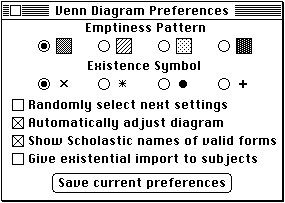

Using Custom Resources
In addition to using system resources to help create the standard Macintosh user interface for your application and standard resource types to help isolate its localizable data, you'll probably also want to create custom resources. This section illustrates how to define a custom resource type and how to create and manage resources of that type. The source code provided here shows how to handle a preferences file. This file stores the user's global preferences, and your application can retrieve them each time it is launched. When it starts up, the Venn Diagrammer application tries to open a preferences file, which contains a single resource with the following type and ID:CONST kPrefResType = 'PRFN'; {type of preferences resource} kPrefResID = 259; {ID of preferences resource}As you've seen earlier in this book, the preferences file needs to contain information about the user's Venn diagram preferences, as displayed in the Preferences dialog box shown in Figure 3-4.Figure 3-4 The Preferences dialog box

Here, there are six pieces of information that need to be tracked. To maintain this information, the Venn Diagrammer application defines a data structure of type
MyPrefsRec(defined in Listing 3-2).Listing 3-2 The structure of a resource containing Venn diagram preferences
TYPE MyPrefsRec = RECORD autoDiag: Boolean; {do we automatically fix the diagram?} showName: Boolean; {do we show names of valid arguments?} isImport: Boolean; {do subjects have existential import?} isRandom: Boolean; {do we select next setting randomly?} emptyInd: Integer; {index of the desired emptiness pattern} existInd: Integer; {index of the desired existence symbol} END; MyPrefsPtr = ^MyPrefsRec; MyPrefsHnd = ^MyPrefsPtr;When it is first launched, the Venn Diagrammer application calls the application-defined routineDoReadPrefs(defined in Listing 3-3) to read the user's existing preferences settings. First,DoReadPrefsdetermines the name of the preferences file by reading a resource in the application's resource file that contains that name. By convention, the name of the preferences file consists of the name of the application followed by the string " Preferences", for instance, Venn Diagrammer Preferences.Listing 3-3 Reading a user's preferences
PROCEDURE DoReadPrefs; VAR myVRefNum: Integer; myDirID: LongInt; myName: Str255; {name of this application} myPrefs: Handle; {handle to actual preferences data} myResNum: Integer; {reference number of opened resource file} myResult: OSErr; CONST kNameID = 4000; {resource ID of 'STR#' with filename} BEGIN {Determine the name of the preferences file.} GetIndString(myName, kNameID, 1); {Figure out where the preferences file is.} IF IsFindFolder THEN myResult := FindFolder(kOnSystemDisk, kPreferencesFolderType, kDontCreateFolder, myVRefNum, myDirID) ELSE myResult := -1; IF myResult <> noErr THEN BEGIN myVRefNum := 0; {use default volume} myDirID := 0; {use default directory} END; {Open the preferences resource file.} myResNum := HOpenResFile(myVRefNum, myDirID, myName, fsCurPerm); {If no preferences file successfully opened, create one } { by copying default preferences in app's resource file.} IF myResNum = -1 THEN myResNum := DoCreatePrefsFile(myVRefNum, myDirID, myName); IF myResNum <> -1 THEN {if we successfully opened the file...} BEGIN UseResFile(myResNum); {make the new resource file current one} myPrefs := Get1Resource(kPrefResType, kPrefResID); IF myPrefs = NIL THEN exit(DoReadPrefs); WITH MyPrefsHnd(myPrefs)^^ DO BEGIN {read the preferences settings} gAutoAdjust := autoDiag; gShowNames := showName; gGiveImport := isImport; gStepRandom := isRandom; gEmptyIndex := emptyInd; gExistIndex := existInd; END; {Make sure some preferences globals make sense.} IF NOT (gExistIndex IN [1..4]) THEN gExistIndex := 1; IF NOT (gEmptyIndex IN [1..4]) THEN gEmptyIndex := 1; {Reinstate the application's resource file.} UseResFile(gAppsResourceFile); END; gPreferencesFile := myResNum; {remember its resource ID} END;After determining the name of the preferences file,DoReadPrefscalls the application-defined utilityIsFindFolderto see whether the operating environment supports theFindFolderfunction. (See Listing 9-6 on page 179 for a definition ofIsFindFolder.) If it does,DoReadPrefscallsFindFolderto find the location of the Preferences folder. TheFindFolderfunction returns the volume reference number and the directory ID of that folder, if it can be found. IfFindFolderisn't available or if it cannot find the Preferences folder,DoReadPrefslooks in the default directory on the default volume.Once the target folder is successfully located,
- IMPORTANT
- Just looking in the default directory when you cannot find the Preferences folder isn't really the best thing to do. Your application would probably want to look in the System Folder to see if your preferences file is there.
DoReadPrefscalls theHOpenResFilefunction to try to open a file having the required name in that folder. If no such file can be opened (as indicated by a returned reference number of -1),DoReadPrefscalls the application-defined functionDoCreatePrefsFileto attempt to create a new preferences file. (See Listing 3-4 for a definition ofDoCreatePrefsFile.)If the existing or newly created preferences file is successfully opened, then
DoReadPrefscallsUseResFileto make that file the current resource file. Then it reads the resource of typekPrefResTypeand IDkPrefResIDfrom that file. If all goes well,DoReadPrefsreads the current settings from that resource and assigns them to the appropriate global variables:WITH MyPrefsHnd(myPrefs)^^ DO BEGIN {read the preferences settings} gAutoAdjust := autoDiag; gShowNames := showName; gGiveImport := isImport; gStepRandom := isRandom; gEmptyIndex := emptyInd; gExistIndex := existInd; END;Finally,DoReadPrefsensures that the values of the two index variables are within acceptable limits and then restores the application's resource file as the current resource file by callingUseResFileonce again. Notice that the preferences resource file is left open; this way, the Venn Diagrammer application need not reopen the file if the user wants to change the stored preferences settings.The
DoCreatePrefsFilefunction that is called byDoReadPrefsis defined in
Listing 3-4. Essentially,DoCreatePrefsFilecreates a resource file in the appropriate location and with the appropriate name; then it copies into that new resource file an existing set of preferences (stored in the application's resource fork).Listing 3-4 Creating a preferences file
FUNCTION DoCreatePrefsFile (myVRefNum: Integer; myDirID: LongInt; myName: Str255): Integer; VAR myResNum: Integer; myResult: OSErr; myID: Integer; {resource ID of resource in app's res fork} myHandle: Handle; {handle to resource in app's res fork} myType: ResType; {ignored; used for GetResInfo} BEGIN myResult := noErr; HCreateResFile(myVRefNum, myDirID, myName); IF ResError = noErr THEN BEGIN myResNum := HOpenResFile(myVRefNum, myDirID, myName, fsCurPerm); IF myResNum <> -1 THEN BEGIN UseResFile(gAppsResourceFile); myHandle := Get1Resource(kPrefResType, kPrefResID); IF ResError = noErr THEN BEGIN GetResInfo(myHandle, myID, myType, myName); myResult := DoCopyResource(kPrefResType, myID, gAppsResourceFile, myResNum); END ELSE BEGIN CloseResFile(myResNum); myResult := HDelete(myVRefNum, myDirID, myName); myResNum := -1; END; END; DoCreatePrefsFile := myResNum; END; END;To copy the existing resource from the application's resource file to the new preferences resource file,DoCreatePrefsFilecalls the application-defined routineDoCopyResource. A version ofDoCopyResourceis shown in Listing 3-5.Listing 3-5 Copying a resource from one resource file to another
FUNCTION DoCopyResource (rType: ResType; rID: Integer; source: Integer; dest: Integer): OSErr; VAR myHandle: Handle; {handle to resource to copy} myName: Str255; {name of resource to copy} myAttr: Integer; {resource attributes} myType: ResType; {ignored; used for GetResInfo} myID: Integer; {ignored; used for GetResInfo} myResult: OSErr; myCurrent: Integer; {current resource file on entry} BEGIN myCurrent := CurResFile; {remember current resource file} UseResFile(source); {set the source resource file} myHandle := Get1Resource(rType, rID); {open the source resource} IF myHandle <> NIL THEN BEGIN GetResInfo(myHandle, myID, myType, myName); {get res name} myAttr := GetResAttrs(myHandle); {get res attributes} DetachResource(myHandle); {so we can copy the resource} UseResFile(dest); {set destination resource file} IF ResError = noErr THEN AddResource(myHandle, rType, rID, myName); IF ResError = noErr THEN SetResAttrs(myHandle, myAttr);{set res attributes of copy} IF ResError = noErr THEN ChangedResource(myHandle); {mark resource as changed} IF ResError = noErr THEN WriteResource(myHandle); {write resource data} END; DoCopyResource := ResError; {return result code} ReleaseResource(myHandle); {get rid of resource data} UseResFile(myCurrent); {restore original resource file} END;As you can see,DoCopyResourceopens the resource to be copied. It copies that resource into the destination resource file by making the destination file the current resource file and then calling the Resource Manager routineAddResource. However, before callingAddResource, you need to disassociate the source resource from its resource file. BecauseAddResourcerequires a handle to some data in memory that is not a handle to an existing resource, you need to call theDetachResourceprocedure to cut the link between the resource data and its original resource file.You can determine whether a Resource Manager call succeeded by calling the function
ResError, which returns the result code from the most recently executed Resource Manager routine. TheDoCopyResourcefunction callsResErrorrepeatedly to make sure that the resource data was successfully added, that the resource attributes were successfully copied, that the destination resource was successfully marked as changed, and that the data was successfully written out to disk.It's easy to see how to save a set of preferences to the user's preferences file. In essence, you simply need to reverse the strategy employed in reading the preferences. Listing 3-6 defines the
DoSavePrefsprocedure, which the Venn Diagrammer application calls whenever the user wants to save the current preferences settings. TheDoSavePrefsprocedure assumes that the application's preferences file is already open.Listing 3-6 Saving current preferences settings
PROCEDURE DoSavePrefs; VAR myPrefData: Handle; {handle to new resource data} myHandle: Handle; {handle to resource to replace} myName: Str255; {name of resource to copy} myAttr: Integer; {resource attributes} myType: ResType; {ignored; used for GetResInfo} myID: Integer; {ignored; used for GetResInfo} BEGIN {Make sure we have an open preferences file.} IF gPreferencesFile = -1 THEN exit(DoSavePrefs); myPrefData := NewHandleClear(sizeof(MyPrefsRec)); HLock(myPrefData); WITH MyPrefsHnd(myPrefData)^^ DO BEGIN autoDiag := gAutoAdjust; showName := gShowNames; isImport := gGiveImport; isRandom := gStepRandom; emptyInd := gEmptyIndex; existInd := gExistIndex; END; UseResFile(gPreferencesFile); {use preferences file} myHandle := Get1Resource(kPrefResType, kPrefResID); IF myHandle <> NIL THEN BEGIN GetResInfo(myHandle, myID, myType, myName); {get res name} myAttr := GetResAttrs(myHandle); {get res attributes} RmveResource(myHandle); IF ResError = noErr THEN AddResource(myPrefData, kPrefResType, kPrefResID, myName); IF ResError = noErr THEN WriteResource(myPrefData); END; HUnlock(myPrefData); ReleaseResource(myPrefData); UseResFile(gAppsResourceFile); {restore app's resource file} END;TheDoSavePrefsprocedure creates a new preferences record and fills in the fields as appropriate. Then it removes the existing preferences resource from the preferences file and adds a new resource. To make sure that the new resource data is written out to disk,DoSavePrefscalls theWriteResourceprocedure. Finally,DoSavePrefsrestores the application's resource file as the current resource file.